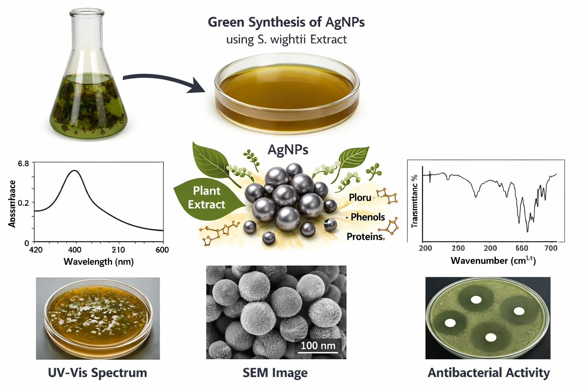
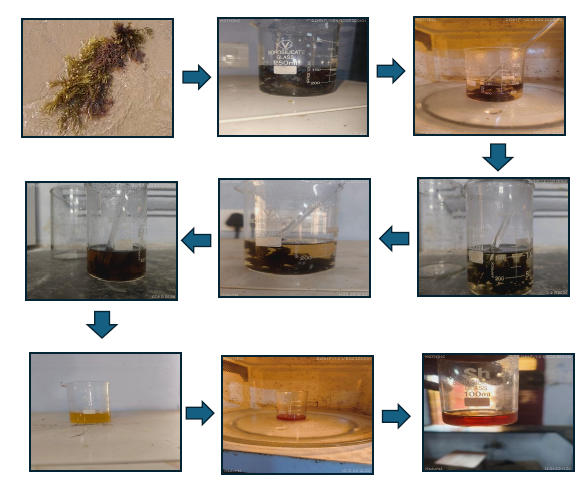
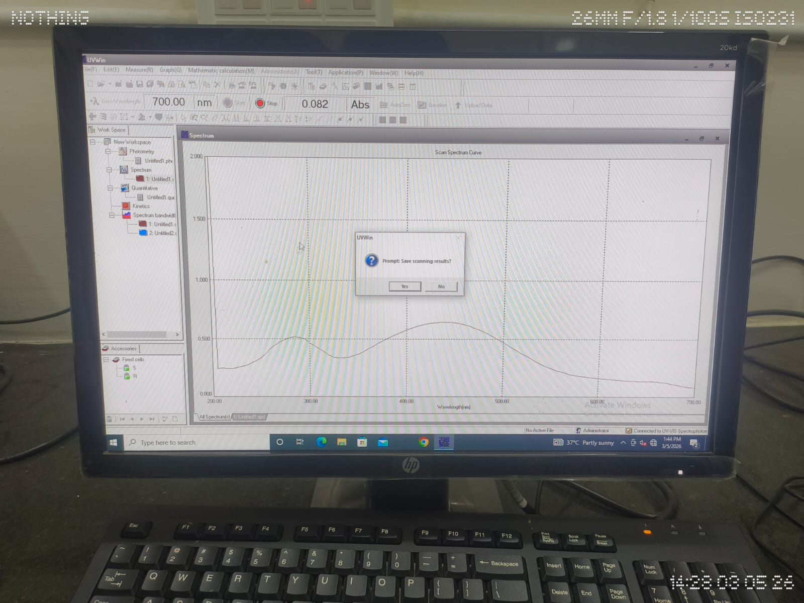
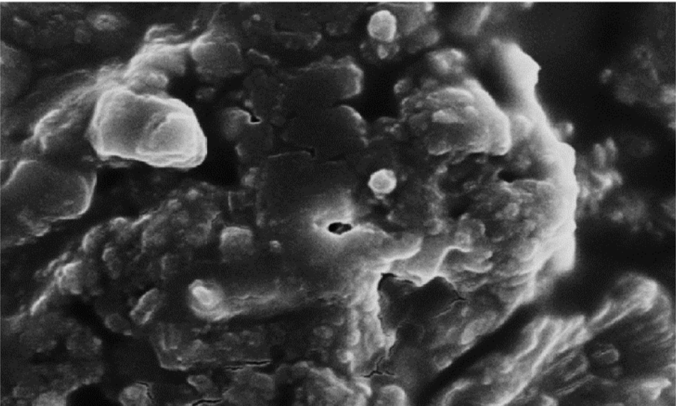
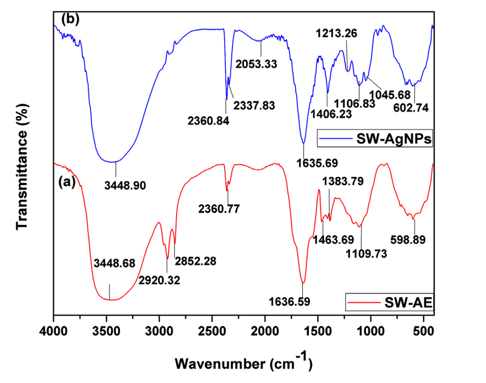
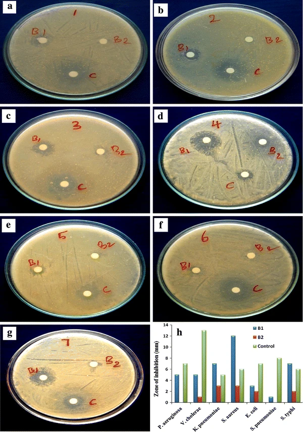

S. WIGHTII SILVER
NANOPARTICLES
Research Details.
1. Introduction
Nanotechnology has become an important field in modern science due to its wide applications in medicine, environmental science, and material science. Silver nanoparticles (AgNPs) are particularly significant because of their strong antimicrobial, catalytic, and optical properties. Recently, green synthesis methods using plant extracts have gained attention as an eco-friendly, cost-effective, and non-toxic alternative to chemical synthesis methods. Plant extracts contain bioactive compounds such as flavonoids, phenols, alkaloids, and proteins which act as reducing and stabilizing agents during nanoparticle formation. In this study, silver nanoparticles were synthesized using the aqueous extract of S. wightii. The formation of AgNPs was confirmed using UV–Visible spectroscopy, Scanning Electron Microscopy (SEM), and Fourier Transform Infrared Spectroscopy (FT-IR). The synthesized nanoparticles were also evaluated for their antibacterial activity.

2. Synthesis Process
- Fresh leaves of S. wightii collected, washed with tap water (2-3 times) and double distilled water (1-3 times), then dried.
- 0.5g dried material + 100ml distilled water, microwave heated 15-20 min (reduced to 60-80ml), filtered (Whatman No.1).
- Diluted 1:10 (10ml extract + 90ml water). Added 2ml 0.1N AgNO₃ to 25ml extract, microwave incubated.
- Color change: clear → yellow → brown (24h), indicating AgNP formation.

3. UV–Visible Spectroscopy Characterization
The formation of silver nanoparticles was confirmed using UV–Visible spectroscopy. The absorption spectrum showed a characteristic peak at 455 nm, which corresponds to the surface plasmon resonance (SPR) of silver nanoparticles. This peak confirms the reduction of Ag⁺ ions to Ag⁰ nanoparticles by phytochemicals present in the S. wightii extract.

Key Results
- Peak: 455 nm
- Size: 20-50 nm
- Stability: High
SEM Characterization
Scanning Electron Microscopy (SEM) analysis determined the morphology and size. SEM images revealed predominantly spherical nanoparticles with uniform distribution and slight aggregation due to drying interactions. Analysis confirmed successful nanoscale silver particle formation.

FT-IR Characterization
FT-IR identified functional groups responsible for reduction/stabilization. Bioactive compounds (phenolics, proteins, flavonoids) from plant extract reduced silver ions.
- O–H stretching: alcohols, phenols
- C=O stretching: carbonyl compounds
- C–N stretching: amines
- C–O stretching: alcohols, esters

Biological Application (Antibacterial Activity)
Silver nanoparticles from S. wightii exhibit strong antibacterial activity against pathogenic bacteria. Mechanisms:
- • Disruption of bacterial cell membranes
- • Generation of reactive oxygen species (ROS)
- • Interaction with bacterial DNA and proteins
Applications: medical coatings, wound dressings, antimicrobial agents, pharmaceuticals.
